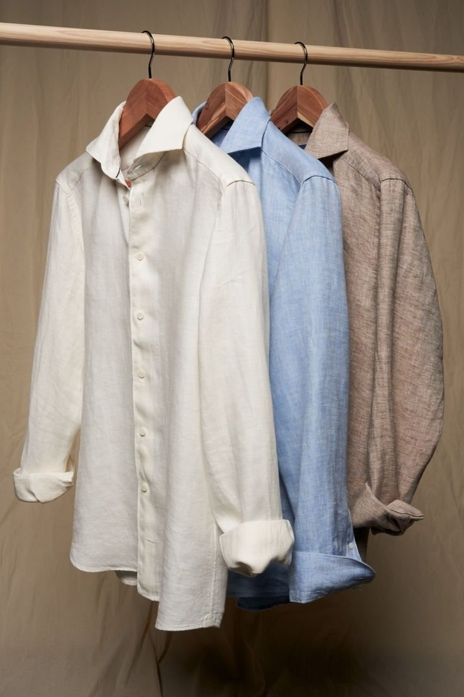

개킴세탁소
개킴세탁소는 묵내동 시장 골목에서 옷과 이불을 빨고 다려 주는 동네 세탁소입니다.
10월 8일(목) 10:40
14:00오늘 접수 마감
14:00까지 맡긴 옷은 오늘을 첫날로 센다. 그 뒤에 맡기면 다음 영업일이 첫날이다.
내일 10월 9일(금)은 한글날이라 문을 닫는다.

오늘 맡기면 찾는 날
- 1일 걸리는 것와이셔츠 · 베개 커버10월 10일(토)
- 2일 걸리는 것바지 · 블라우스 · 정장10월 12일(월)
- 3일 걸리는 것울 코트 · 운동화 · 실크10월 13일(화)
- 4일 걸리는 것패딩 · 이불 · 커튼10월 14일(수)
- 7일 걸리는 것한복10월 17일(토)
- 10일 걸리는 것가죽 재킷10월 21일(수)
찾는 시각은 그날 15:00부터다. 일요일과 공휴일은 날수에 넣지 않는다. 품목별 계산
접수 조회
접수증 오른쪽 위의 번호다. 다음 화면에서 전화번호 뒷자리 4개를 함께 적는다.
자주 맡기는 것
- 와이셔츠물세탁 · 1일2,500원
- 바지드라이 · 2일4,000원
- 정장 상하드라이 · 2일9,000원
- 니트·스웨터드라이 · 2일5,000원
- 울 코트드라이 · 3일12,000원
- 긴 패딩웨트 · 4일18,000원